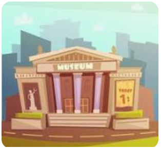

Finders Keeper
Who will succeed? The race of wits
Young kids often have fantasies where they want to take part in heists and chases. And this game gives the opportunity to do exactly that. The story line of this game is inspired by every child’s fantasy, where they want to delve deeper into their dreams and want to be a part of big heists and an action filled plot. This game will also provide opportunities for the players to indulge themselves in IQ boosting brain teasers and subject(maths, science,geography,history) related questions.
Included in the Game
App- A fully functioning app to help you with getting riddles, making teams, & an installed timer
Board Game- The essential part of the game and the entirety is reliant on the board game. A game with vibrant colors and the thrill of many iconic family games are all board games & this game is no different.
Cards- Games NOwadays have no advantage from a logistics & Knowledge perspective. This game incorporates both factors and provides a clearer way to learn handling concepts quicker helping in academics.

About Us
In a bustling metropolis known for its rich culture, history, and affluent residents, six notorious robbers have banded together with a daring plan. Their target: the city's museum, home to three of the world's most coveted treasures – the Midnight Masquerade, a painting famous for its mysterious history and rumored to be cursed; the Celestial Ring, an ancient artifact with diamonds as old as time itself, said to grant immense power to its wearer; and the Phoenix Feather, a mythical artifact believed to possess the ability to grant eternal life. These priceless items are not just symbols of wealth but are deeply interwoven with the city's identity and lore. The robbers, each a master in their craft, have different motivations but share a common goal – to pull off the greatest heist in history. However, this city is also home to an elite force of four detectives, known for their unparalleled skills in solving crimes and protecting the city's treasures. These guardians have sworn to safeguard its heritage and are the robbers' most formidable adversaries.
